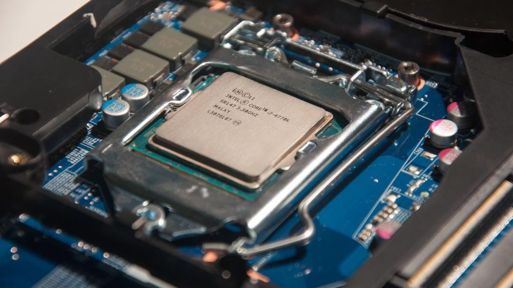
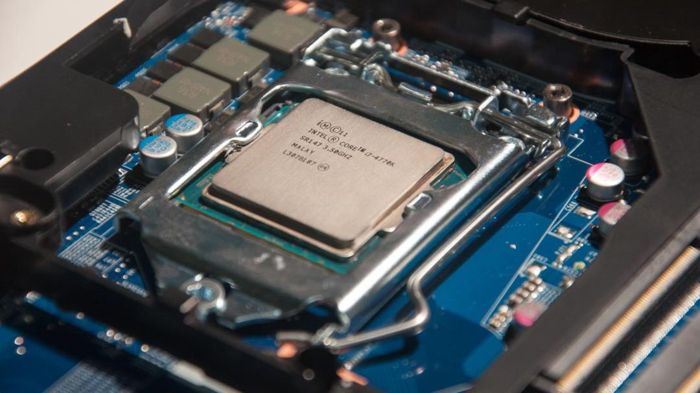

The central processing unit (CPU) of a computer is a piece of hardware that carries out the instructions of a computer program. It performs the basic arithmetical, logical, and input/output operations of a computer system. The CPU is like the brains of the computer - every instruction, no matter how simple, has to go through the CPU. So let's say you press the letter 'k' on your keyboard and it appears on the screen - the CPU of your computer is what makes this possible. The CPU is sometimes also referred to as the central processor unit, or processor for short. So when you are looking at the specifications of a computer at your local electronics store, it typically refers to the CPU as the processor.
 
